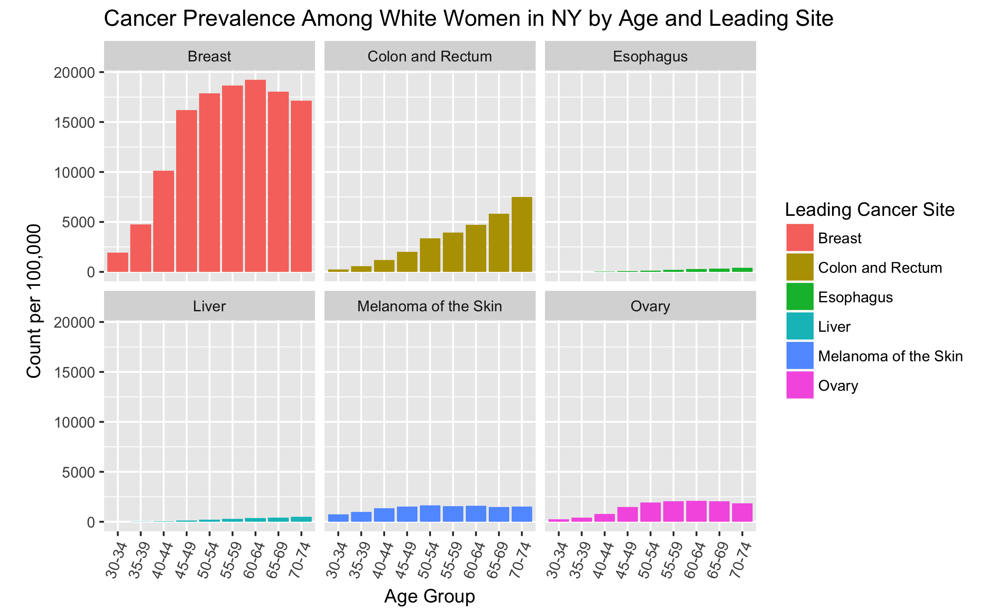
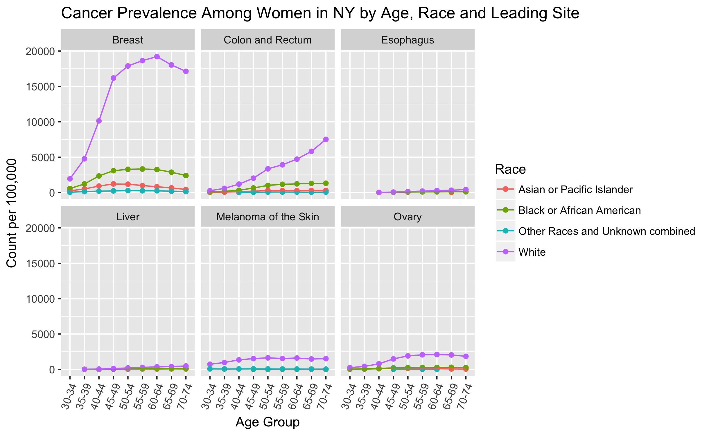
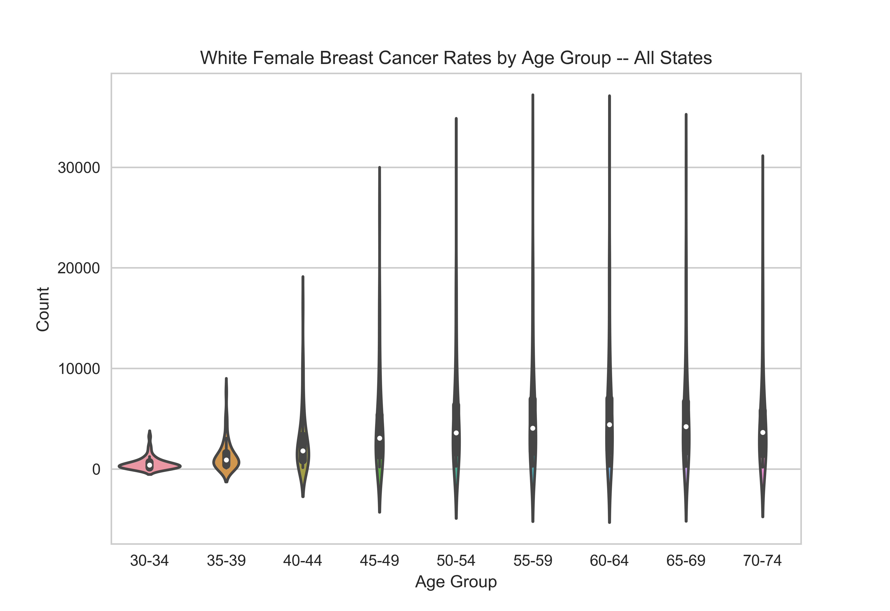
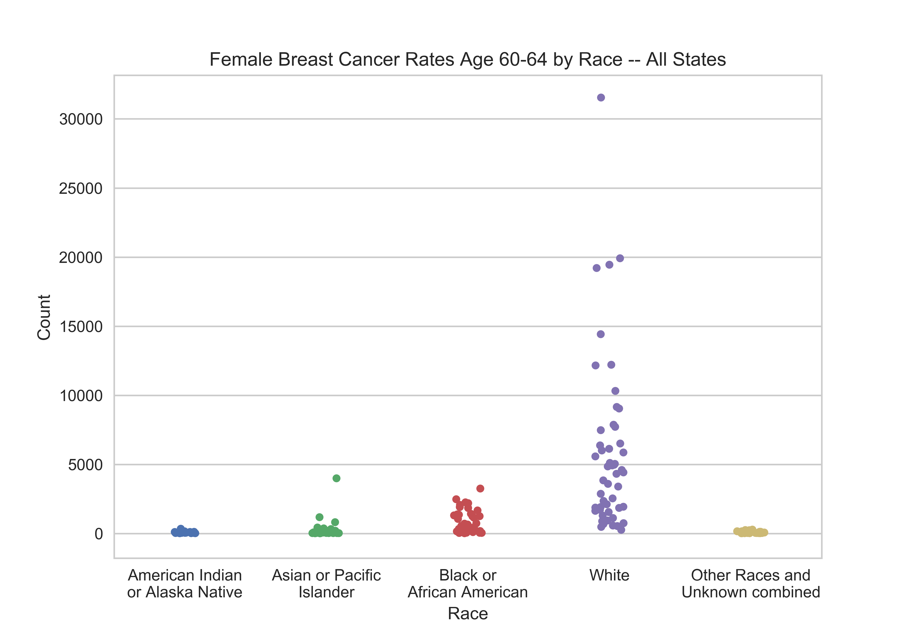

ANLY-503 Homework 1
Introduction
I grew up primarily in New York State as a white female, and know many people who have battled breast cancer. Having some self interest and wanting to understand cancer better for the communities that I am a part of, I focused my data exploration and visual generation largely on white females, New York State, and breast cancer, looking at and plotting different subsets of the data with these groups as my primary focal areas. Some of the specific questions I asked as I explored the data were:
- Among white women in New York state, what types of cancers are the most prevalent? And what do these different cancer rates look like for different age groups?
- Is this the same for all races, or do different races have different cancers that are more prevalent?
- Among young white women (ages 30-34), are breast cancer rates uniform across the different states? Or do they vary? If so, which states have the highest breast cancer rates among young white women? Does this variation look similar for different age groups?
- Among older women (ages 60-64), what do breast cancer rates look like for different races?
Visualization 1
Among white women in New York state, we see that breast cancer is by far the most prevalent type of cancer. Another important finding from this graph is that some cancers like colon and rectum cancer, esophageal cancer, and liver cancer appear to have rates that increase steadily with age. Other cancers like breast cancer peak at an earlier age and then the rates taper off.
Visualization 2
After seeing the results of the first visual, I was curious to break down the cancer rates by race -- and not just to look at the rates among white people. I assumed there would be some differences, but thought that rates would be higher for different racial groups for different types of cancers. This is not what we are seeing, though. Instead, the rates are fairly dramatically higher for white people for all of the types of cancer -- especially for breast cancer and colon and rectum cancer.
This makes me wonder why this is. While finding a conclusive answer for this question is well beyond the scope of this homework, I can't help but wonder if this is an indication that non-white people in New York state have less access to health care, so that their cancers are simply not being caught and reported at such a high level, or if there is some other factor that is affecting reporting.
Visualization 3

Looking at the differences in cancer rates among young (age 30-34) white women in different states, we see that there is quite a large range: from 32 per 100,000 to 3,240 per 100,000. The states with the highest rates are California, Texas, and New York -- with around 2-3 percent of white women in their early 30s being diagnosed with breast cancer.
It's natural to ask why this might be, but not easy to answer. A county level or other more granular data about the geography of these cancer rates might help shed more light on this. I also wonder if there could be some sort of diagnosing bias -- that is, that the cancer rates aren't necessarily this different but rather there is a higher rate of diagnosis in certain states due to wealth or quality of doctors or some other factors.
Visualization 4
The Tableau visualization showed us that there seemed to be a pretty wide spread in breast cancer rates among 30-34 year old females in different states. This visualization shows that in fact, this is a relatively low spread compared to the spread of other age groups. White female 55-59 and 60-64 year olds have the widest range of breast cancer rates in different states. We also see that the pattern made by the tops of the violins looks quite similar to the breast cancer section of Visualization 1.
This visualization was partly an experiment with Seaborn and violin plots. I am not loving the violin plots here, but nevertheless wanted to present this one here, and discuss some of the reasons I think it does not work so well. First because there is such a wide spread for most of the age groups, we don't really see much color in the violins, so aesthetically, it is not too pleasing. Second, there obviously are not rates going below 0, so it is somewhat confusing that the bottoms of the violins go below 0. Third, because there would be at most 51 points per column (one for each state + DC), I think a scatter plot (technically known as a "strip plot" when one variable is categorical) would provide a helpful amount of additional information.
Visualization 5
In addition to investigating the spread of female breast cancer rates for each state by age group, I thought it might be illuminating to investigate this by race for the 60-64 age group. While we saw from Visualization 2 that in New York, white women had much higher breast cancer rates, I thought it was possible that this could be different in different states; this was not really the case. Overall, the rates for female breast cancer for 60-64 year olds were higher for white people than for other races.
Again, this was an experimentation with using Seaborn -- but here, I used the strip plot instead of the violins. While I think this is somewhat more illuminating than the violins, I find myself wanting to hover over the dots and find out which state each dot represents, and perhaps exactly what the precise cancer rate is for that state and race.
I thought Tableau would be a simple way to do this, but in fact, it was quite involved! The points overlap quite a bit, but Tableau does not have a built in jitter capability. Determined not to give up, in Excel, I converted each race to a number (1 through 5), added random jitter (also in Excel), and then plotted the count against the number + random jitter, and colored the points by race. However, this made it so that the x ticks were numbered 1 through 5 instead of being labeled with the race. The workaround that I found was to eliminate the tick marks, put the visual into a dashboard, and then manually add text boxes to the dashboard. Kind of a hack, but it is nice to have the jitter and the information provided upon hover. Here is the Tableau version!